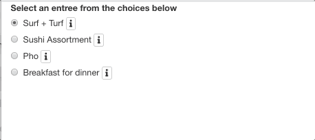

Code Walk Through Part 1
So are using the bsButton()function to produce the UI (or the visual icon) for the information button. Since we want each radio button (i.e., each entree option) to have it’s own designated information icon, we need to make a list within a list. The parent list element (the primary list container) is the list containing the entree choice names. In this case, choiceNames is the parent list and within that list are four child list elements (one list per entree choice). We structure our code this way in order to attach an information icon button for each of the radio buttons (i.e., each entree option). If we don’t create these child list elements, the radioButton() function will try to read the bsButton() as it’s own function argument and you will receive an error.
Let’s review the code within the child list ement for the first choice: Surf + Turf. The bsButton requires a few arugments. The first being, an inputID (this is important and we’ll come back to this in a few paragraphs). In this case, we gave the first choice an inputID as surf-info. The next argument is a label. The R documentation says this for the label argument: “The contents of the button or link–usually a text label, but you could also use any other HTML, like an image.” We will leave this blank (i.e., ” “) since we want to generate an icon and not an actual word for the button graphic. The next argument is icon which is optional and only needed if you want to display an icon for this button (which we do!). In this case, I want to use the font-awesome library’s information icon. You will need to install fontawesome before this step :) The fontawesome documentation is here and here is a list of all fontawesome icons :) Next, we want to use the default stype of the icon button, and lastly, we want the icon to be extra small.
Here’s what is looks like thus far…

This is looking better! We have the icons working, but we need to add information to the icons as popovers using BSpopover :)
library(shiny)
library(shinyBS)
# Define UI for application
ui <- fluidPage(
radioButtons("entree", "Select an entree from the choices below",
choiceNames = list(
list("Surf + Turf",
bsButton("surf-info", label = "", icon = icon("info", lib = "font-awesome"), style = "default", size = "extra-small")),
list("Sushi Assortment",
bsButton("sushi-info", label = "", icon = icon("info", lib = "font-awesome"), style = "default", size = "extra-small")),
list("Pho",
bsButton("pho-info", label = "", icon = icon("info", lib = "font-awesome"), style = "default", size = "extra-small")),
list("Breakfast for dinner",
bsButton("break-info", label = "", icon = icon("info", lib = "font-awesome"), style = "default", size = "extra-small"))),
choiceValues = list("surf", "sushi", "pho", "break")),
bsPopover(
id = "surf-info",
title = "More information",
content = HTML(paste0(
"Ribeye steak, grilled jumbo shrimp, butter roasted potato medley, grilled asparagus."
)),
placement = "right",
trigger = "hover",
options = list(container = "body")
),
bsPopover(
id = "pho-info",
title = "More information",
content = HTML(paste0(
"Rice noodles, braised oxtail, and anise-coriander scented broth."
)),
placement = "right",
trigger = "hover",
options = list(container = "body")
),
bsPopover(
id = "sushi-info",
title = "More information",
content = HTML(paste0(
"20 piece assortment of nigiri and sashimi with tuna, salmon, eel, and yellowtail."
)),
placement = "right",
trigger = "hover",
options = list(container = "body")
),
bsPopover(
id = "break-info",
title = "More information",
content = HTML(paste0(
"Sarahs Saturday special of chocolate Kodiak pancakes, soft scrambled eggs, and an assortment of seasonal fruit."
)),
placement = "right",
trigger = "hover",
options = list(container = "body")
)
)
server <- function(input, output) {
}
# Run the application
shinyApp(ui = ui, server = server)